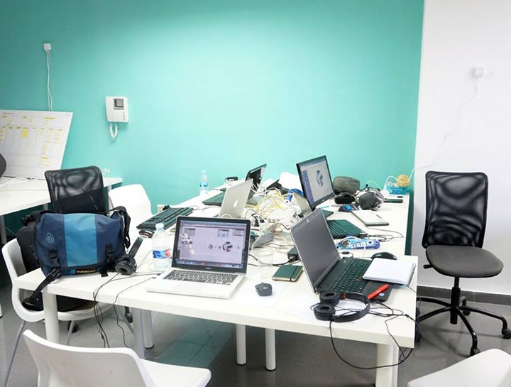
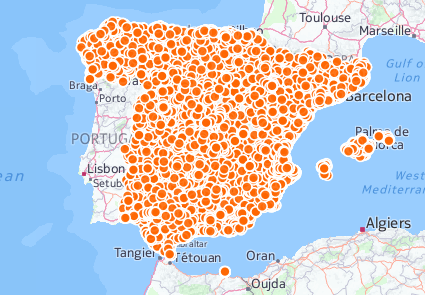

Motivación
Problema
Pregunta
¿qué colegios están cerca de mi casa?
¿Quién se plantea esta pregunta?
Profesionales de la educación en concurso de traslado y padres que se mudan, primer año de escuela, etc
¿Cómo ordenarías todos los colegios de la CV (≈3.500) en función del tiempo de viaje hasta tu casa?
¿Calcular uno a uno
todos los trayectos?
«Acortamos el camino hacia la decisión inteligente»
¿Quiénes?

Vicente Sanjaime, Jorge Sanz, Pedro-Juan Ferrer,
Daniel Gastón, Alicia Rodrigo y Rafael Oliete
¿Cuándo?

1er SummerHack VLC · 6/9/14
¿Cómo?
desarrollando un sistema de
ordenación de colegios en función del
tiempo de viaje
= +
= +
Los datos
Colegios + Códigos Postales
+ Tiempos de viaje
Colegios
- Publicados por la GVA
- ≈3500 registros
- Primero en mdb, ahora en ods y pdf
- Nombre, datos de contacto, dirección postal,
coordenadas geográficas, régimen - ODS CSV SHP
Colegios
- En el ámbito nacional el
Ministerio de Educación
publica en HTML - Estamos trabajando en ello…
- Pero ese tema para otro día 😈

Códigos postales
- Punteado a mano el centro urbano
de cada código postal - SHP
Preparación de datos de OSM
Cálculo masivo
de tiempos de viaje
¿Qué es OSRM?
- Dos proyectos: servidor y cliente
- Servidor de cálculos de rutas altamente eficiente
- Enfocado a usar datos de OpenStreetMap
Poner en marcha OSRM
- Descargar el código fuente de OSRM
- Compilar el software
- Preparar la cartografía para un perfil (en coche)
- Arrancar el servidor y comprobar que funciona
Cálculo de tiempos de viaje
- Script en Python
- Carga un SHP de códigos postales
- Ordena por código
- Abre un CSV nuevo
- Recorre la lista de códigos postales pidiendo
a OSRM el tiempo y distancia de ida y vuelta - Se generan n*n-1 registros ≈ 600.000
- CSV
SHP
😱
- No podemos subir tablas sin geometrías
- En CSV todo son cadenas de texto
¿Por qué esta estructura?
- Es más compacta, ahorra filas
- Pero complica las consultas
- Peeeeeero cabe en una
cuenta gratuita de CartoDB 😇
Los servicios
Tabla de colegios
Mapa de colegios
Objetivo:
Dado un código postal, cruzar la tabla de colegios con la de tiempos para asignar a cada uno el tiempo de viaje
Dado
"ftimes" como los tiempos y distancias
de 46960 a todos los demás
Y
"ttimes" como los tiempos y distancias
de todos a 46960
Montamos "totaltimes" como
ttimes + ftimes + (46960 al
que les damos tiempo y distancia = 0)
Y así ya podemos:
Cruzar coles con totaltimes
por el campo cp
Y ordenamos el resultado por
tiempos y distancias
Mapas dinámicos
CartoCSS para generar mapa temático por distancias (demo)
CartoDB como
servicio de mapas
- Podemos generar visualizaciones estáticas
- Pero también las podemos generar «al vuelo»
- 1: Establecer una consulta SQL
- 2: Establecer un estilo CartoCSS
API de consulta
¿Qué es una API?
- Formato (y protocolo) para
comunicarnos con un sistema - WMS, WFS+GML, CSW, ...
-
CartoDB expone una API SQL
que genera JSON, CSV, Shapfiles,...
¿SQL?
sql?q=select count(*) cuentas from times
sql?q=select * from times limit 3&format=csv
¡Y por supuesto SQL espacial!
http://decasaalcole.cartodb.com/api/v2/sql?q=select st_astext(st_buffer(the_geom,1)) from cp limit 1
WHAT?
Efectivamente, podeis ejecutar
SQL espacial con cualquier
tabla que alguien publique en CartoDB
Desarrollo de los clientes
Los clientes básicamente son interfaces para ejecutar la SQL y presentarla de una forma amigable para el usuario, ofreciendo adicionalmente filtros para afinar la búsqueda.
Cliente web
Portada y filtros
Listado de centros

Mapa temático de centros

Página de la GVA del centro
El equipo
Detalles
- Código en github
- Aplicación HTML5/CSS3/JavaScript
- Require.js + JQuery + Bootstrap
- Mapas con Leaflet + CartoDB.js
- Construcción con Grunt y Bower
Cliente móvil
Página de entrada
Listado de centros
Información ampliada
Detalles
- iOS y Android
- Desarrollo HTML/CSS/JavaScript
- Apache Cordova
Resultados
- Trabajo de difusión
en
redes sociales y contacto directo - Buena acogida en foros de profesores
- Unas 3.500 visitas
- Superado límite gratuito para Mapbox
- Hay que esperar al próximo concurso
Conclusiones
- Gracias al OpenData podemos pasar
de la idea a la acción - OSRM es un producto muy potente y versátil
- CartoDB es una plataforma para
publicar y
analizar datos geográficos muy interesante - Se puede desarrollar un producto completo
con una inversión inicial casi nula